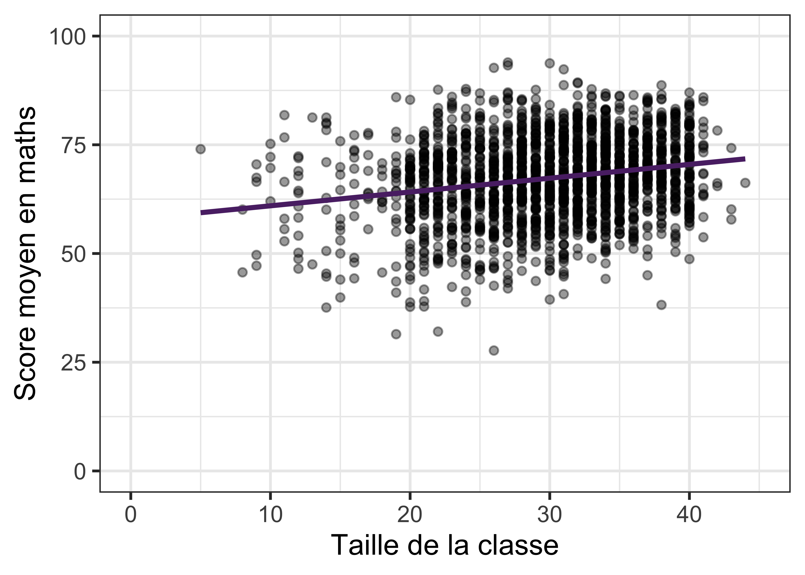
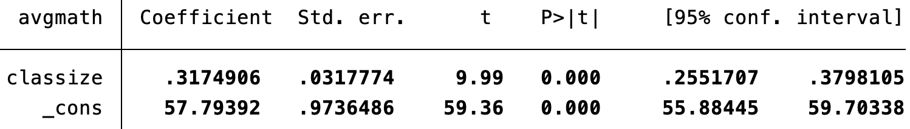
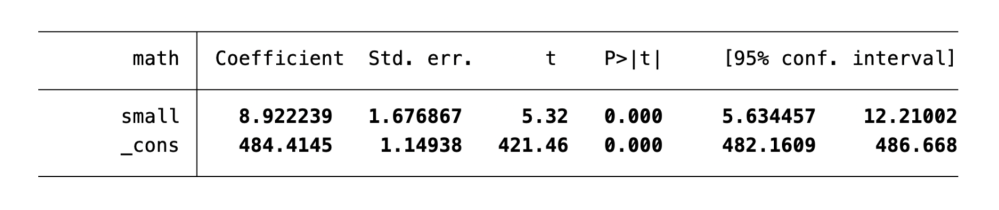
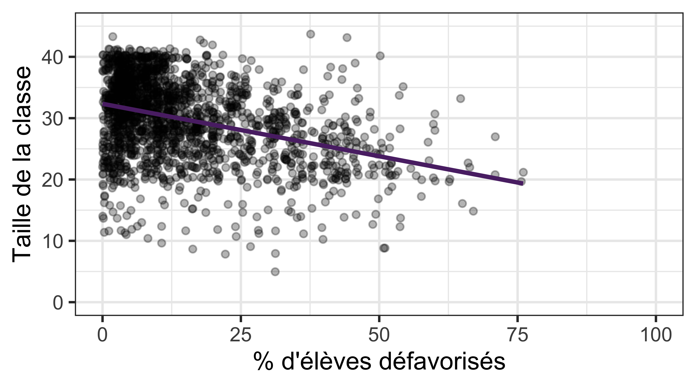
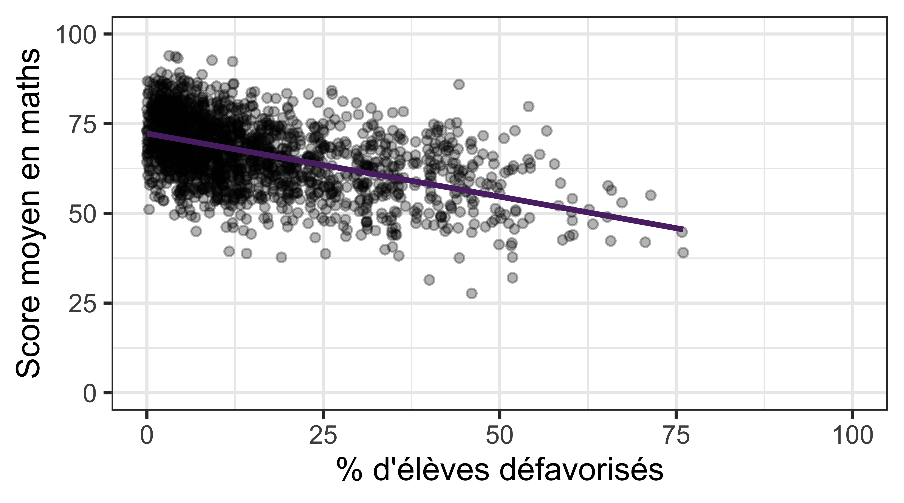
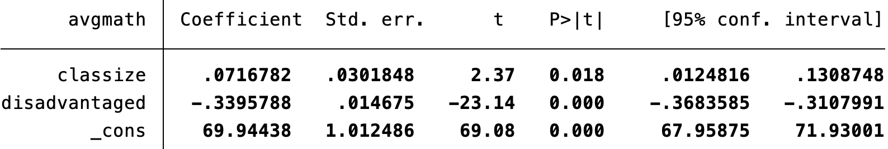
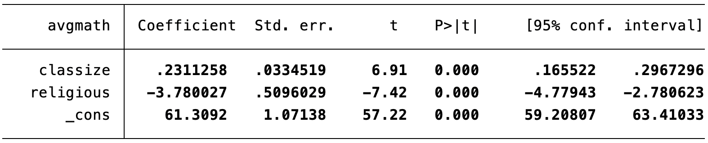
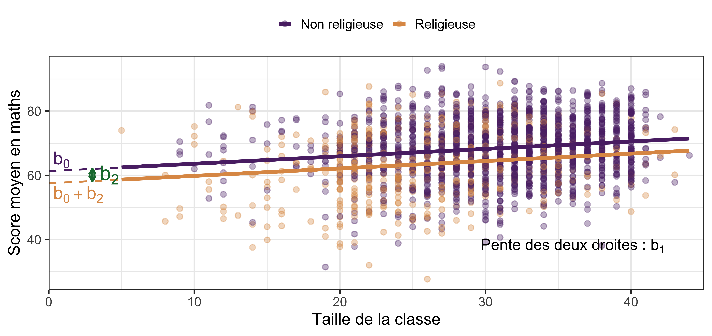
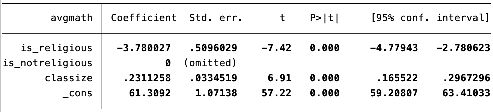

Économétrie (ECON0212)
HEC Liège
October 2026
Au programme
Point de départ : taille de la classe et performance des élèves

regress avgmath classize

\widehat{\text{score}}_i = 57.79 + \color{#5b2c74}{0.32}\times \text{taille}_i
Chapitre 2 (Régression simple) : un élève de plus dans la classe est associé à +0.32 point en maths.
Chapitre 3 (STAR project - traitement aléatoire ) : « être assigné à une petite classe » était aléatoire, et il augmentait les scores (environ +9 points en maths en maternelle).

Comment réconcilier les deux ? La régression simple n’est pas une expérience aléatoire : les grandes et les petites classes diffèrent peut-être par autre chose que leur taille (par exemple, des caractéristiques observables et non observables).
La localisation n’est pas observée, mais disadvantaged (% d’élèves issus de milieux défavorisés, plus élevé dans les régions pauvres) en mesure une dimension clé. Est-il lié à la fois à x et à y ?
Lien avec x (taille de la classe)

👉 Plus de défavorisés \rightarrow classes plus petites.
Lien avec y (score en maths)

👉 Plus de défavorisés \rightarrow scores plus faibles.
On veut l’effet de la taille de la classe sur le score en contrôlant pour le % d’élèves défavorisés.
\Rightarrow On inclut les deux variables comme régresseurs :
\text{score}_i = \beta_0 + \beta_1\, \text{taille}_i + \beta_2\, \text{défavorisés}_i + e_i
disadvantaged.Objectif : enrichir le modèle pour prendre en compte les facteurs qui sont simultanément liés à y_i et à x_{i1}.
Dans la population, on suppose la relation linéaire :
y_i = \beta_0 + \beta_1 x_{i1} + \beta_2 x_{i2} + \dots + \beta_k x_{ik} + e_i
Comme au chapitre 2, on choisit les estimateurs b_0, b_1, \dots, b_k qui MINIMISENT LA SOMME DES CARRÉS DES RÉSIDUS :
\min_{b_0, b_1, \dots, b_k} \; \sum_{i=1}^n \hat e_i^2 = \sum_{i=1}^n \big(y_i - b_0 - b_1 x_{i1} - \dots - b_k x_{ik}\big)^2
Stata résout le système pour nous.On obtient ensuite, comme avant :
y_i = \beta_0 + \textcolor{red}{\beta_1} x_{i1} + \beta_2 x_{i2} + e_i
Étape 1. On régresse x_{i1} sur x_{i2} (et une constante), et on garde le résidu \color{#1a7a3d}{\hat r_{i1}} :
x_{i1} = \gamma_0 + \gamma_1 x_{i2} + r_{i1}, \qquad \textcolor{#1a7a3d}{\hat r_{i1}} = x_{i1} - \hat\gamma_0 - \hat\gamma_1 x_{i2}
\color{#1a7a3d}{\hat r_{i1}} = la partie de x_{i1} qui n’est pas expliquée par x_{i2}.
Étape 2. L’estimateur MCO de \textcolor{red}{\beta_1} dans la régression multiple est :
\textcolor{red}{b_1} = \frac{\sum_{i=1}^n \textcolor{#1a7a3d}{\hat r_{i1}}\, y_i}{\sum_{i=1}^n \textcolor{#1a7a3d}{\hat r_{i1}}^2}
\Rightarrow \textcolor{red}{b_1} est la pente de la régression simple de y_i sur \textcolor{#1a7a3d}{\hat r_{i1}} : \;y_i = \alpha_0 + \beta_1 \textcolor{#1a7a3d}{\hat r_{i1}} + v_i.
Le résultat précédent se généralise à chaque variable explicative x_j :
\textcolor{red}{b_j} = \frac{\sum_{i=1}^n \hat r_{ij}\, y_i}{\sum_{i=1}^n \hat r_{ij}^{\,2}}, \qquad j = 1, \dots, k
où \hat r_{ij} est le résidu de la régression de x_j sur toutes les autres variables explicatives (et une constante).
\widehat y = b_0 + b_1 x_1 + b_2 x_2 \quad\Longrightarrow\quad \Delta \widehat y = b_1\, \Delta x_1 + b_2\, \Delta x_2
Si x_2 est maintenu constant (\Delta x_2 = 0) :
⚠️ Attention : seuls les régresseurs inclus sont maintenus constants. Les facteurs non inclus (dans e_i) peuvent encore être corrélés avec x_j et biaiser l’estimation \rightarrow biais de variable omise .
La RLM permet aussi de modéliser une relation non linéaire. Exemple (Wooldridge, éq. 3.4) : consommation et revenu des ménages.
\text{cons}_i = \beta_0 + \beta_1\, \text{inc}_i + \beta_2\, \text{inc}_i^2 + e_i
regress avgmath classize disadvantaged

\widehat{\text{score}}_i = 69.94 + 0.07\,\text{taille}_i - 0.34\,\text{défav}_i
b_0 = 69.94 : score prédit pour une classe de 0 élève et 0 % de défavorisés (pas d’interprétation concrète).
b_1 = 0.07 : à % de défavorisés constant, un élève de plus est associé, en moyenne, à +0.07 point en maths.
b_2 = -0.34 : à taille de classe constante, une hausse de 1 point de pourcentage de défavorisés est associée, en moyenne, à −0.34 point en maths.
| Régression simple | Régression multiple | |
|---|---|---|
Coefficient de classize |
0.32 | 0.07 |
disadvantaged inclus ? |
non | oui |
\rightarrow Formalisons ce mécanisme : le biais de variable omise.
Variable omise (z) : variable qui affecte y, qui est corrélée avec x, mais qui n’est pas incluse dans la régression. Elle se retrouve alors dans le terme d’erreur.
Trois régressions :
« Vrai » modèle (régression multiple) : \;y_i = \beta_0 + \beta_1 x_i + \textcolor{#d90502}{\beta_2 z_i} + e_i
Modèle estimé (régression simple, z omise) : \;\widehat y_i = \tilde b_0 + \tilde b_1 x_i
Variable omise sur le régresseur : \widehat z_i = \tilde\delta_0 + \textcolor{#DE9854}{\tilde\delta_1 x_i}
E(\tilde b_1 \mid x, z) = \beta_1 + \underbrace{\color{#d90502}{\beta_2} \times \color{#DE9854}{\tilde\delta_1}}_{\text{biais de variable omise}}
L’estimateur de la régression simple est (chapitre 2) : \;\tilde b_1 = \sum_{i=1}^n (x_i - \bar x)\, y_i \,\big/ \sum_{i=1}^n (x_i - \bar x)^2
On remplace y_i par le vrai modèle y_i = \beta_0 + \beta_1 x_i + \beta_2 z_i + e_i. Comme \sum_i (x_i - \bar x) = 0 et \sum_i (x_i - \bar x) x_i = \sum_i (x_i - \bar x)^2 :
\tilde b_1 = \beta_1 + \textcolor{#d90502}{\beta_2}\, \underbrace{\frac{\sum_{i=1}^n (x_i - \bar x)\, z_i}{\sum_{i=1}^n (x_i - \bar x)^2}}_{=\ \textcolor{#DE9854}{\tilde\delta_1}} + \frac{\sum_{i=1}^n (x_i - \bar x)\, e_i}{\sum_{i=1}^n (x_i - \bar x)^2}
On prend l’espérance conditionnellement aux x_i et aux z_i. Sous l’hypothèse E(e_i \mid x, z) = 0 (H3 du chapitre 2, mais avec deux régresseurs), le dernier terme s’annule:
E(\tilde b_1 \mid x, z) = \beta_1 + \textcolor{#d90502}{\beta_2}\, \textcolor{#DE9854}{\tilde\delta_1} \qquad\Longrightarrow\qquad \text{Biais} = \textcolor{blue}{E(\tilde b_1 \mid x, z) - \beta_1} = \color{#d90502}{\beta_2}\, \textcolor{#DE9854}{\tilde\delta_1}
\text{Biais} = \underbrace{\color{#d90502}{\beta_2}}_{\text{pente de la régression de } y \text{ sur } z \text{ (à } x \text{ donné)}} \times \underbrace{\color{#DE9854}{\tilde\delta_1}}_{\text{pente de la régression de } z \text{ sur } x}
| \color{#DE9854}{\tilde\delta_1} > 0 | \color{#DE9854}{\tilde\delta_1} < 0 | |
|---|---|---|
| \color{#d90502}{\beta_2} > 0 | biais positif | biais négatif |
| \color{#d90502}{\beta_2} < 0 | biais négatif | biais positif |
Exemple
Salaire et années d’études. Variable omise : les capacités (ability). Elles augmentent le salaire (\color{#d90502}{\beta_2} > 0) et les personnes plus capables font en moyenne plus d’études (\color{#DE9854}{\tilde\delta_1} > 0) \Rightarrow biais positif.
(1) Régression simple (z omise) :
\widehat{\text{score}} = 57.79 + \tilde b_1\,\text{taille}, \tilde b_1 = 0.317
(2) Régression multiple :
\widehat{\text{score}} = 69.94 + b_1\,\text{taille} + \textcolor{#d90502}{b_2}\,\text{défav}
b_1 = 0.072, \quad \color{#d90502}{b_2 = -0.340}
(3) Variable omise sur x :
\widehat{\text{défav}} = 35.78 + \textcolor{#DE9854}{\tilde\delta_1}\,\text{taille}
\textcolor{#DE9854}{\tilde\delta_1 = -0.724}
Interprétation du biais :
\underbrace{0.317}_{\tilde b_1} = \underbrace{0.072}_{b_1} + \underbrace{(-0.340)}_{\color{#d90502}{b_2}} \times \underbrace{(-0.724)}_{\textcolor{#DE9854}{\tilde\delta_1}}
La régression simple surestimait l’association entre taille de la classe et score.
On utilise maintenant le score en lecture (avgverb) comme variable dépendante.
Ouvrir la base grade5.dta dans Stata.
Régresser avgverb sur classize et disadvantaged. Interpréter les coefficients et les comparer avec ceux obtenus pour les maths. Comparer ensuite le coefficient de classize avec celui de la régression simple (sans disadvantaged).
Quelles autres variables disponibles pourrait-on ajouter ? Estimer la régression avec ces variables et discuter le signe et la magnitude des coefficients.
On contrôle maintenant pour religious au lieu de disadvantaged. Quel est le signe du biais de variable omise lié à religious dans la régression simple ? Calculer sa magnitude et l’interpréter. (Indice : régresser religious sur classize pour obtenir \tilde\delta_1.)
Jusqu’ici, les régresseurs étaient quantitatifs : « +1 unité » a un sens.
Mais certaines variables sont qualitatives (ex. catégorielles) : type de classe (small), type d’école, région, religion, genre…
⚠️ Le codage numérique d’une variable catégorielle est arbitraire (ex. school : 1 = centre-ville, 2 = rural, 3 = périurbain, 4 = urbain). « +1 unité » n’a pas de sens !
\text{score}_i = \beta_0 + \beta_1\, \text{taille}_i + \beta_2\, \text{religieuse}_i + e_i
religious = 1 si l’école est religieuse, 0 sinon. regress avgmath classize religious :

\rightarrow Le coefficient d’une indicatrice est une différence de moyennes par rapport à la catégorie de référence (religious = 0). Démonstrations : voir l’annexe.

Deux droites parallèles (même pente b_1), décalées verticalement de b_2.
Condition : aucun régresseur ne peut être une combinaison linéaire exacte des autres (ni de la constante). Sinon, les MCO ne peuvent pas séparer leurs effets.
Exemple : le piège des indicatrices. On crée is_religious et is_notreligious et on les met toutes les deux dans la régression :

Pour chaque école : is_religious + is_notreligious = 1 = la constante.
\Rightarrow collinéarité parfaite : Stata supprime automatiquement une variable (omitted).
⚠️ Règle : avec G catégories, on inclut G-1 indicatrices. La catégorie omise est la référence ; les coefficients se lisent par rapport à elle.
Données star_data.dta (chapitre 3). Supprimer les observations avec des valeurs manquantes.
Créer trois indicatrices : small (petite classe), regular (classe normale) et regular_plus (classe normale + aide). Que vaut small + regular + regular_plus pour chaque élève ?
Régresser math sur small, regular et regular_plus. Que se passe-t-il ? Quelle est la catégorie de référence ?
Comparer avec regress math i.star. Les résultats sont-ils cohérents ?
Comme au chapitre 2 : \;R^2 = \dfrac{SCE}{SCT} = 1 - \dfrac{SCR}{SCT} \in [0, 1]
Le R^2 ajusté pénalise l’ajout de régresseurs :
\bar R^2 = 1 - \frac{n-1}{n-k-1}\,\frac{SCR}{SCT} = 1 - \frac{n-1}{n-k-1}\,(1 - R^2)
où n = nombre d’observations et k = nombre de régresseurs (hors constante).
\bar R^2 = 1 - \frac{n-1}{n-k-1}(1-R^2)
Le R^2 ajusté est toujours inférieur ou égal au R^2 :
\bar R^2 \leq R^2
Que se passe-t-il lorsqu’on ajoute une variable explicative ?
On utilise les données STAR (star_data.dta) pour réviser les points précédents.
Garder les élèves de 2e année (grade). Régresser math sur i.school (regarder d’abord tab school). Interpréter les coefficients. Quelle est la catégorie de référence ? Quelle pourrait être une variable omise ?
Calculer la part d’élèves bénéficiant d’un repas gratuit (lunch = “free”) par school. Qu’observez-vous ? Ajouter lunch à la régression précédente. Comment les coefficients changent-ils ?
Régresser math sur i.star, puis ajouter gender, ethnicity, lunch, degree, experience et school. Comme STAR est une expérience aléatoire, le coefficient de star devrait-il beaucoup changer ? Qu’en concluez-vous sur la randomisation ?
Quel est le R^2 ajusté de cette dernière régression ? Comment l’interpréter ?
Variable indicatrice : démonstrations
\widehat{\text{score}} = b_0 + b_1\, \text{taille} + b_2\, \text{religieuse}
Constante. Pour une école non religieuse avec une classe de taille 0 : \widehat{\text{score}}(\text{religieuse} = 0,\ \text{taille} = 0) = b_0 + b_1 \times 0 + b_2 \times 0 = b_0
Pente de la taille. À statut religieux R \in \{0,1\} fixé, comparons une classe de taille n_1 + 1 et une classe de taille n_1 : \widehat{\text{score}}(R,\ n_1 + 1) - \widehat{\text{score}}(R,\ n_1) = \big[b_0 + b_1 (n_1 + 1) + b_2 R\big] - \big[b_0 + b_1 n_1 + b_2 R\big] = b_1
\Rightarrow b_1 = variation prédite du score associée à un élève de plus, à statut religieux constant (la même pour les deux types d’écoles).
← Retour à la diapositive « Variable indicatrice : interprétation »
À taille de classe T fixée, comparons une école religieuse et une école non religieuse :
\widehat{\text{score}}(\text{religieuse} = 1,\ T) = b_0 + b_1 T + b_2
\widehat{\text{score}}(\text{religieuse} = 0,\ T) = b_0 + b_1 T
\widehat{\text{score}}(1,\ T) - \widehat{\text{score}}(0,\ T) = b_2
\Rightarrow b_2 = différence de score prédit entre écoles religieuses et non religieuses, à taille de classe constante.
Et b_0 + b_2 = score prédit dans une école religieuse avec une classe de taille 0.
← Retour à la diapositive « Variable indicatrice : interprétation »